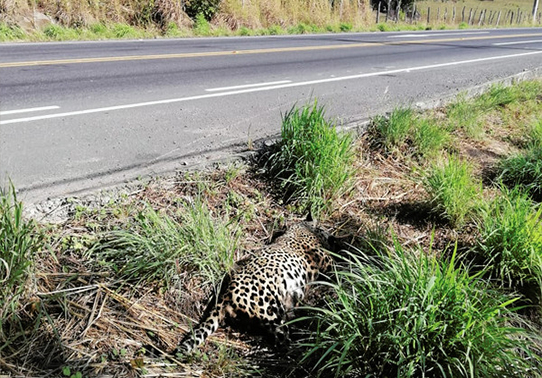

Habitat Loss and Fragmentation
 Habitat loss and fragmentation pose severe and escalating threats to leopard populations across the globe. As human populations continue to expand, natural landscapes are being rapidly transformed for agricultural, urban, and industrial purposes. This anthropogenic impact results in the destruction of large swaths of leopard habitats and the fragmentation of once contiguous areas. The consequences are far-reaching, impacting the leopards' ability to find adequate territories, prey, and suitable breeding grounds.
The ramifications of habitat loss and fragmentation are multifaceted
and alarming. Firstly, as leopards' natural habitats shrink, they are
forced into closer proximity to human settlements, leading to an
upsurge in human-wildlife conflicts. Leopards, in search of food and
territory, may venture into villages, resulting in attacks on
livestock or, in extreme cases, on humans. This escalation often
prompts retaliatory killings, further endangering leopard populations.
Secondly, the fragmentation of habitats disrupts essential ecological
processes. It interferes with natural migration routes, hinders the
establishment of territories, and impedes breeding patterns. These
disruptions can lead to a decline in genetic diversity among leopard
populations, reducing their adaptive capacity to environmental
changes. This diminished genetic diversity makes them more vulnerable
to diseases and other threats, undermining the overall health and
resilience of the species.
what mechanisms are taken
to reduce the threat
- Protected Area Expansion
- Corridor Development
- Habitat Restoration Programs
- Land Use Zoningt
- Human-Wildlife Conflict Mitigation
- Research and Monitoring
- Community Education and Involvement
Illegal Wildlife Trade and Poaching
 Illegal wildlife trade and poaching represent a grave menace to
leopard populations worldwide. Leopards are targeted for their coveted
skins, bones, and other body parts, driven by the demand in
traditional medicine, luxury markets, and the exotic pet trade. This
illegal commerce exerts immense pressure on leopard populations,
pushing them towards the brink of endangerment.
Illegal wildlife trade and poaching represent a grave menace to
leopard populations worldwide. Leopards are targeted for their coveted
skins, bones, and other body parts, driven by the demand in
traditional medicine, luxury markets, and the exotic pet trade. This
illegal commerce exerts immense pressure on leopard populations,
pushing them towards the brink of endangerment.
The consequences of illegal wildlife trade and poaching are dire and
extend beyond the immediate loss of individual leopards. Firstly, the
direct impact results in a decline in leopard numbers as they are
ruthlessly hunted for their valuable parts. Beyond this, the removal
of leopards from their natural ecosystems disrupts the delicate
balance within these habitats. With leopards serving as apex
predators, their absence can lead to an overpopulation of certain prey
species, negatively affecting vegetation and other wildlife in the
area.
Moreover, the involvement of organized crime in illegal wildlife trade
further complicates conservation efforts. Poaching networks often
operate across borders, making it challenging to combat this illicit
activity effectively. The high profitability of leopard parts in black
markets perpetuates the demand, driving a vicious cycle that threatens
the survival of leopard populations across their range. Efforts to
combat this multifaceted threat require coordinated international
action, stringent law enforcement, and community engagement to address
the root causes of illegal wildlife trade and poaching.
what mechanisms are taken
to reduce the threat
- Strengthening Law Enforcements
- Community-Based Anti-Poaching Units
- Alternative Livelihoods
- Demand Reduction Campaigns
- Undercover Operations and Intelligence Sharing
- Wildlife Forensics and DNA Analysis
- International Cooperation and Treaties